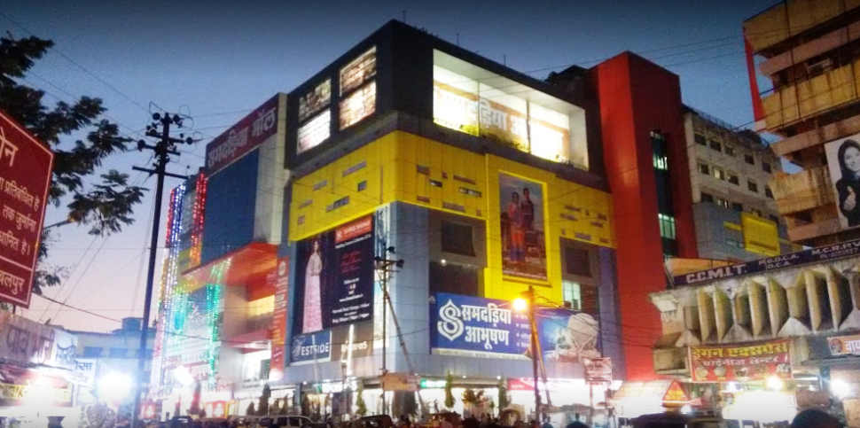
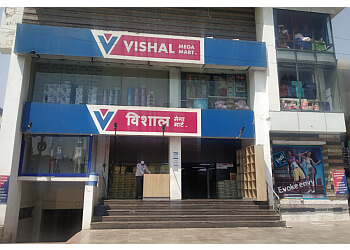
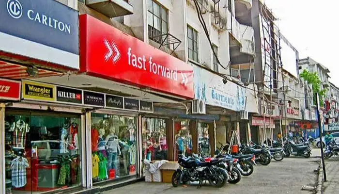
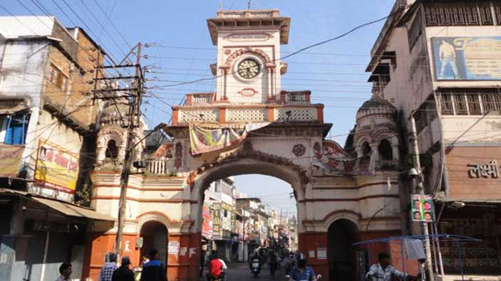
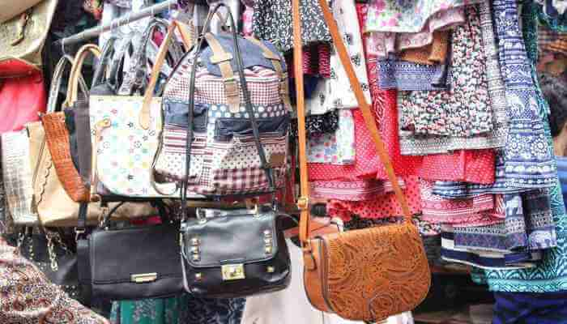

South Avenue Mall
South Avenue Mall is a great place who want to enjoy some time away from the city. This shopping mall also has a lot of great stores like Big Bazaar etc. Also, there are some great food junctions that you can find here such as Domino’s. Also, you can find a great multiplex to enjoy movies inside named ‘SAM Movie Magic’. So, this mall is a one stop solution for all your needs, be it entertainment, food or shopping, you will have a great time being here in this mall. This mall is also famous for hosting various musical, cultural and lifestyle programs and events. This mall has a lot of space that helps in hosting of this kind of program. Also, there is a parking facility which is available in this mall.

Samdareeya Mall
Samdareeya Mall is a really famous mall which is in the famous Awadhpuri, Marhatal. You will find various stores here such as Bata, Blackberry Clothes, Reliance Ltd, US Polo etc. Also, there are various food brands as well here such as Dominos etc. So this shopping place will also satiate your food cravings as well while you enjoy shopping here, we are sure that this place will give you a great time enjoying the food with your family being in Samdareeya Mall. Also, this mall is a great place for the movie lovers as well named ‘Samdareeya Era Cinema’. So, this mall offers a one stop solution for all your needs.

Vishal Mega Mart
Vishal Mega Mart is India’s leading Fashion led hypermarket with 400+ stores spread across India. Vishal Mega Mart’s mission is to make aspirations affordable for all its customers by providing shoppers with a wide range of Latest Fashion, General Merchandise and Grocery needs. Vishal’s customers love its unique combination of great quality and amazing prices. Vishal also delivers excellent quality products in fashion, food & grocery and general merchandise at great value through its exclusive brands available only at Vishal.

Ganjipura
Ganjipura is one really famous shopping place that is in Jabalpur. This place is a paradise for girls and women of all age groups as they can get a vast variety of options regarding the fashionable clothing, beautiful jewelry, footwears, watches, makeup etc. This is why we called this place a paradise for the women shoppers, you will love the collection of party wear clothing, bracelets, necklace, kangans, sarees, lehengas etc and the collection will spoil you by the varied variety. Also, the variety will be of affordable as well as expensive products both. Also, this one has a wholesale market that will enchant you by offering you some great deals on all that you would want to buy from this market.

Gantaghar
If you are getting married anytime soon or you have a wedding in your family or friend’s circle then Kamaniya Gate is a wonderful market for you to shop in, you will really enjoy the gorgeous collection of jewelry and clothes that you get being here. You will not only get some great collections for brides and grooms here but also for wedding guests. This market is in the Uprainganj of Jabalpur and happens to be one of the best places for shopping in Jabalpur. You will really like the ethnic and modern jewelry as well as the ethnic and modern clothing from here. We assure you that you will not be disappointed.

Gorakhpur
If you are also a big fan of branded clothes then Gorakhpur market is the place for you to be in. This market is really amazing for you as you can buy some great branded apparels being here such as top, shirt, t shirt, menswear, bottomwear, topwear, footwear etc and a lot of types of clothes as well as accessories. You will enjoy Other than these local markets, there are also various shopping malls that you can find in Jabalpur and these ones will offer you a great shopping experience as any other mall in any other metro city.